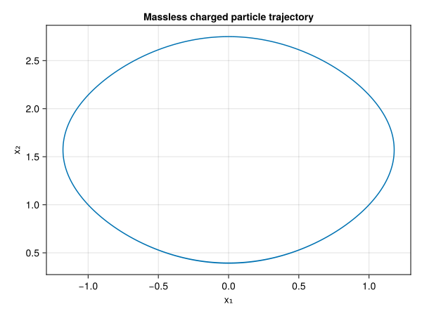
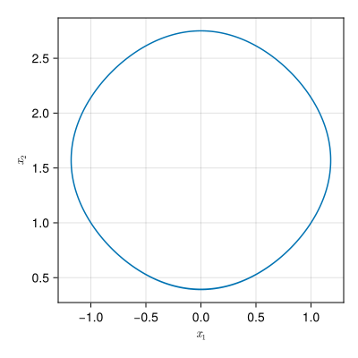

Massless Charged Particle
GeometricProblems.MasslessChargedParticle — Module
Massless charged particle in 2D
The Lagrangian is given by
\[L(x, \dot{x}) = A(x) \cdot \dot{x} - \phi (x) ,\]
with magnetic vector potential
\[A(x) = \frac{A_0}{2} \big( 1 + x_1^2 + x_2^2 \big) \begin{pmatrix} - x_2 \\ + x_1 \\ \end{pmatrix} ,\]
electrostatic potential
\[\phi(x) = E_0 \, \big( \cos (x_1) + \sin(x_2) \big) ,\]
and magnetic and electric fields
\[\begin{aligned} B(x) &= \nabla \times A(x) = A_0 \, (1 + 2 x_1^2 + 2 x_2^2) , \\ E(x) &= - \nabla \phi(x) = E_0 \, \big( \sin x_1, \, - \cos x_2 \big)^T . \end{aligned}\]
The Hamiltonian form of the equations of motion reads
\[\dot{x} = \frac{1}{B(x)} \begin{pmatrix} \hphantom{-} 0 & - 1 \\ + 1 & \hphantom{+} 0 \\ \end{pmatrix} \nabla \phi (x) .\]
The problem is available in explicit (odeproblem), implicit (iodeproblem, idaeproblem, idaeproblem_spark) and Lagrangian (lodeproblem, ldaeproblem) form. The latter two are built from the Lagrangian $L(x, \dot{x}) = \vartheta (x) \cdot \dot{x} - H(x)$ with one-form $\vartheta = A$ and the symplectic two-form
\[\Omega_{ij} (x) = \frac{\partial \vartheta_i}{\partial x_j} - \frac{\partial \vartheta_j}{\partial x_i} = \begin{pmatrix} \hphantom{+} 0 & - B(x) \\ + B(x) & \hphantom{-} 0 \\ \end{pmatrix} ,\]
so that the Euler-Lagrange equations read $\Omega (x) \, \dot{x} = - \nabla \phi (x)$.
See GeometricProblems.MasslessChargedParticleSingular for a formulation with the same magnetic field but a "singular" (one-component) vector potential, suitable for degenerate variational integrators.

GeometricProblems.MasslessChargedParticle.idaeproblem — Function
Creates an implicit DAE object for the massless charged particle in 2D.
GeometricProblems.MasslessChargedParticle.idaeproblem_spark — Function
Creates an implicit DAE object for the massless charged particle in 2D.
GeometricProblems.MasslessChargedParticle.iodeproblem — Function
Creates an implicit ODE object for the massless charged particle in 2D.
GeometricProblems.MasslessChargedParticle.ldaeproblem — Function
Creates a variational DAE object for the massless charged particle in 2D.
GeometricProblems.MasslessChargedParticle.lodeproblem — Function
Creates a variational (Lagrangian) ODE object for the massless charged particle in 2D.
GeometricProblems.MasslessChargedParticle.odeproblem — Function
Creates an ODE object for the massless charged particle in 2D.
GeometricProblems.MasslessChargedParticle.poincare_invariant_1st — Function
poincare_invariant_1st(N; DT = Float64, plan = PoincareInvariants.DEFAULT_FIRST_PLAN)Set up the first Poincaré invariant
\[I_1 (t) = \oint_{\gamma_t} \vartheta ,\]
the integral of this module's one-form $\vartheta = A(q)$ over a loop $\gamma_t$, sampled at N points. The Lagrangian is degenerate, so the momentum is not an independent coordinate but determined by $p = \vartheta(q)$, and the loop lives in the two-dimensional configuration space alone.
This is implemented in the MasslessChargedParticlePoincareInvariants extension and becomes available once PoincareInvariants is loaded. Sample a loop with f_loop, advect the sample points with PIEnsembleProblem and evaluate with compute!:
pinv = poincare_invariant_1st(200)
prob = iodeproblem(; timespan = (0.0, 1E2), timestep = 1E-1)
sol = integrate(PIEnsembleProblem(prob, pinv, f_loop), VPRKGauss(2))
I₁ = compute!(pinv, sol, parameters(prob))Note that I₁ is preserved by a variational integrator only to the order of the discretisation, not exactly: the numerical solution satisfies $p = \vartheta(q)$ only up to the truncation error.
The two gauges of the massless charged particle differ by a gauge transformation, which changes $\vartheta$ by an exact form. Since the integral of an exact form over a closed loop vanishes, both give the same $I_1$ for the same loop.
See also poincare_invariant_2nd.
GeometricProblems.MasslessChargedParticle.poincare_invariant_2nd — Function
poincare_invariant_2nd(N; DT = Float64, plan = PoincareInvariants.DEFAULT_SECOND_PLAN)Set up the second Poincaré invariant
\[I_2 (t) = \int_{\sigma_t} \omega ,\]
the integral of this module's two-form $\omega$, whose only component is $\omega_{12} = -B(q)$, over a surface $\sigma_t$ sampled at N points. As for the first invariant the surface lives in the two-dimensional configuration space alone. The default plan samples at Padua points and rounds N up to the next Padua number, so the invariant may use slightly more points than requested; getpointnum reports how many.
This is implemented in the MasslessChargedParticlePoincareInvariants extension and becomes available once PoincareInvariants is loaded. It is used exactly like the first invariant, with f_surface in place of f_loop. If the surface is the region a loop bounds, then $I_2$ over the surface and $I_1$ over the loop agree by Stokes' theorem — f_surface is not that region for f_loop, but lies inside it.
Unlike $\vartheta$, $\omega = -d\vartheta$ is gauge invariant, so both gauges of the massless charged particle share the same two-form.
See also poincare_invariant_1st.
Singular vector potential
GeometricProblems.MasslessChargedParticleSingular — Module
Massless charged particle in 2D with "singular" vector potential
The Lagrangian is given by
\[L(x, \dot{x}) = A(x) \cdot \dot{x} - \phi (x) ,\]
with the "singular" (one-component) magnetic vector potential
\[A(x) = - A_0 \, x_2 \, \big( 1 + 2 x_1^2 + \tfrac{2}{3} x_2^2 \big) \begin{pmatrix} 1 \\ 0 \\ \end{pmatrix} ,\]
electrostatic potential
\[\phi(x) = E_0 \, \big( \cos (x_1) + \sin(x_2) \big) ,\]
and magnetic and electric fields
\[\begin{aligned} B(x) &= \nabla \times A(x) = A_0 \, (1 + 2 x_1^2 + 2 x_2^2) , \\ E(x) &= - \nabla \phi(x) = E_0 \, \big( \sin x_1, \, - \cos x_2 \big)^T . \end{aligned}\]
The Hamiltonian form of the equations of motion reads
\[\dot{x} = \frac{1}{B(x)} \begin{pmatrix} \hphantom{-} 0 & - 1 \\ + 1 & \hphantom{+} 0 \\ \end{pmatrix} \nabla \phi (x) .\]
This is the same physical system as GeometricProblems.MasslessChargedParticle: the magnetic field $B$, electric field $E$ and hence the dynamics are identical. Only the vector potential differs by a gauge transformation, chosen here so that its second component vanishes ($A_2 = 0$). This "singular" one-form yields the same Euler-Lagrange equations but a different variational integrator, and is the form required by the degenerate variational integrator (DVI) method of GeometricIntegrators.
The problem is available in explicit (odeproblem), implicit (iodeproblem, idaeproblem, idaeproblem_spark) and Lagrangian (lodeproblem, ldaeproblem) form. The latter two are built from the Lagrangian $L(x, \dot{x}) = \vartheta (x) \cdot \dot{x} - H(x)$ with one-form $\vartheta = A$ and the symplectic two-form
\[\Omega_{ij} (x) = \frac{\partial \vartheta_i}{\partial x_j} - \frac{\partial \vartheta_j}{\partial x_i} = \begin{pmatrix} \hphantom{+} 0 & - B(x) \\ + B(x) & \hphantom{-} 0 \\ \end{pmatrix} ,\]
so that the Euler-Lagrange equations read $\Omega (x) \, \dot{x} = - \nabla \phi (x)$. Since the gauge transformation shifts $\vartheta$ only by an exact one-form, $\Omega$ is the same as for GeometricProblems.MasslessChargedParticle, while the Lagrangian differs.

GeometricProblems.MasslessChargedParticleSingular.idaeproblem — Function
Creates an implicit DAE object for the massless charged particle in 2D.
GeometricProblems.MasslessChargedParticleSingular.idaeproblem_spark — Function
Creates an implicit DAE object for the massless charged particle in 2D.
GeometricProblems.MasslessChargedParticleSingular.iodeproblem — Function
Creates an implicit ODE object for the massless charged particle in 2D.
GeometricProblems.MasslessChargedParticleSingular.ldaeproblem — Function
Creates a variational DAE object for the massless charged particle in 2D.
GeometricProblems.MasslessChargedParticleSingular.lodeproblem — Function
Creates a variational (Lagrangian) ODE object for the massless charged particle in 2D.
GeometricProblems.MasslessChargedParticleSingular.odeproblem — Function
Creates an ODE object for the massless charged particle in 2D.
GeometricProblems.MasslessChargedParticleSingular.poincare_invariant_1st — Function
poincare_invariant_1st(N; DT = Float64, plan = PoincareInvariants.DEFAULT_FIRST_PLAN)Set up the first Poincaré invariant
\[I_1 (t) = \oint_{\gamma_t} \vartheta ,\]
the integral of this module's one-form $\vartheta = A(q)$ over a loop $\gamma_t$, sampled at N points. The Lagrangian is degenerate, so the momentum is not an independent coordinate but determined by $p = \vartheta(q)$, and the loop lives in the two-dimensional configuration space alone.
This is implemented in the MasslessChargedParticlePoincareInvariants extension and becomes available once PoincareInvariants is loaded. Sample a loop with f_loop, advect the sample points with PIEnsembleProblem and evaluate with compute!:
pinv = poincare_invariant_1st(200)
prob = iodeproblem(; timespan = (0.0, 1E2), timestep = 1E-1)
sol = integrate(PIEnsembleProblem(prob, pinv, f_loop), VPRKGauss(2))
I₁ = compute!(pinv, sol, parameters(prob))Note that I₁ is preserved by a variational integrator only to the order of the discretisation, not exactly: the numerical solution satisfies $p = \vartheta(q)$ only up to the truncation error.
The two gauges of the massless charged particle differ by a gauge transformation, which changes $\vartheta$ by an exact form. Since the integral of an exact form over a closed loop vanishes, both give the same $I_1$ for the same loop.
See also poincare_invariant_2nd.
GeometricProblems.MasslessChargedParticleSingular.poincare_invariant_2nd — Function
poincare_invariant_2nd(N; DT = Float64, plan = PoincareInvariants.DEFAULT_SECOND_PLAN)Set up the second Poincaré invariant
\[I_2 (t) = \int_{\sigma_t} \omega ,\]
the integral of this module's two-form $\omega$, whose only component is $\omega_{12} = -B(q)$, over a surface $\sigma_t$ sampled at N points. As for the first invariant the surface lives in the two-dimensional configuration space alone. The default plan samples at Padua points and rounds N up to the next Padua number, so the invariant may use slightly more points than requested; getpointnum reports how many.
This is implemented in the MasslessChargedParticlePoincareInvariants extension and becomes available once PoincareInvariants is loaded. It is used exactly like the first invariant, with f_surface in place of f_loop. If the surface is the region a loop bounds, then $I_2$ over the surface and $I_1$ over the loop agree by Stokes' theorem — f_surface is not that region for f_loop, but lies inside it.
Unlike $\vartheta$, $\omega = -d\vartheta$ is gauge invariant, so both gauges of the massless charged particle share the same two-form.
See also poincare_invariant_1st.